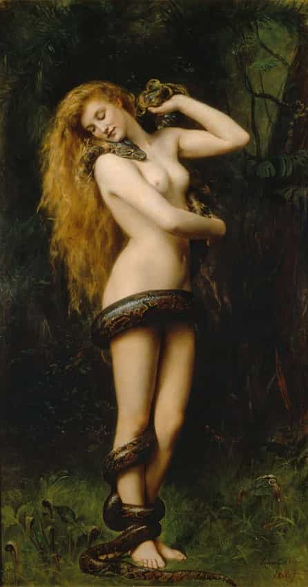
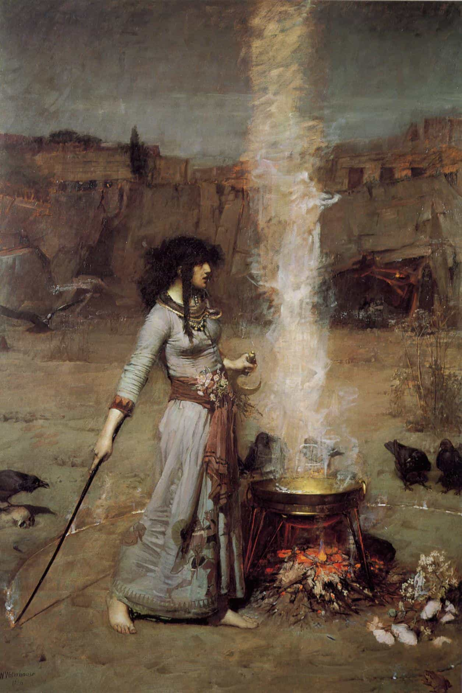
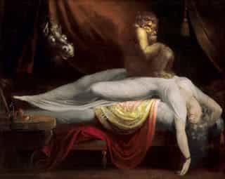

< < < Back
The Disturbing Relationship Between Feminism And The Occult – Return Of Kings
To begin with, I want to share a real-life experience of a friend who was in a “relationship” with an Eastern European girl who dabbled in the occult. To condense his long saga, his girl was your typical “traditional,” “feminine” girl who cooked for him and provided great on-demand sex (often with incapacitating post-orgasm hangovers). Everything seemed “perfect” between them for six months or so, but all along this time, little did he know that she was a closet “witch” who was casting “love” spells on him “to bind” him to her.
Succubus, witch, and “girlfriend”— all in one. He later discovered that he’d gotten more than what he had bargained for.
A spell gone horribly wrong
Gradually, things got predictable and boring as the relationship progressed and the passion faded. Her subtle, capricious demands soon became overt domination, which prompted him to seek an immediate closure to the relationship. This triggered the worst in her.

Hell hath no fury as a witch scorned
He then proceeded to have a harrowing time. He shared how he discovered she was stashing used condoms with his dried semen, shaved hair and pictures for her occult experiments to “bind” him before he finally kicked her out of his home. Not to mention she had even tried to “hex” his food to complete the binding on him.
Things then turned very ugly, with her first trying to stalk him (after he kicked her out), then psychologically intimidating him, and when all that failed—she tried to screw up his social and professional reputation however she could.
He was strong enough to resist her attacks, but his relationship was a compelling enough inspiration to learn about the occult, and to discover the common ideology it shares with feminism. Since readers may or may not believe in the paranormal, the point deduced from this story which will be primarily focused upon below is the surprising link between feminism and the occult.
The first revolt against patriarchy
The glorification of the female form, beginning with Lilith, the supposed first wife of Adam (who disobeyed him and is considered to be the first “feminist”) is an integral part of the occult, unlike in the patriarchal Abrahamic religions.

According to occult belief, Lilith was Adam’s first wife, the archetype feminist that every man marries and then divorces. She constantly argued with Adam and refused to lie under him during copulation by saying they were “equal.”A text of the “Story Of Lilith” can be read here. Her refusal to submit to Adam is said to be the first revolt against patriarchy.
Occult and feminism in the modern world
Feminism has its roots in the occult and witchcraft. A point well established by Mitch Horowitz, author of “Occult America” .
Modern progressive feminist society has in many ways become a covert, occult-driven society. Reverence for the “Goddess” or “Divine Feminine” (a concept common to witchcraft, feminism, liberalism), beginning with the rise of the “Goddess movement” in Anglo countries and coinciding with second-wave feminism in the 70’s, has become more prevalent in the present day. A resultant product of five decades of feminism and its associated spirituality (occult).
Today, we’re bombarded day in day out, everywhere by occult symbolism through media. Just type “occult symbolism” in any search engine on the web and see the results for yourself.
Blue-pill (beta) culture, which typically romanticizes the concept of an ideal, sentimentalized love, has all its roots in the occult, as seen with the recent increasing consumerism of romantic occult-themed cinema by modern societies, especially by the younger generation.
Most female occultists of the past and present held the belief of the psychological superiority of women as compared to that of men. Similarly, masquerading as a movement for women’s rights, feminism—as a cruel ruse—tells women their natural biological instincts are “socially constructed” to oppress them.
Feminism’s social engineering, designed to destroy gender identity by interchanging gender roles, is actually a movement for women to covertly promote a hatred for men, as well as indirectly serving as a driving force for the occult (or its concepts), for they both often share a common ideology.
Feminism’s mission to give any woman however worthless and undeserving she may be the power to lead men like bridled horses or yoked oxen whichever, whenever, and however she wants to is analogous to the witch who‘d supposedly “control” a man to do her bidding, through “magical” manipulation.
Connecting the lines from the dots
Is it a mere coincidence that the repeal of the Witchcraft Act in the UK in 1951, coupled with a revival of occult/witchcraft coincided with the rise of feminism? To illustrate this question further, an excerpt from an article which came out a few years back (you can read the article in full here):
“Why has witchcraft gained such a hold in our Christian-based society? Certainly there are several factors. Many witches are fervent feminists. This is probably the main contributing factor to the rapid growth of the movement. Following ancient rituals faithfully, the Wiccan religion is female-dominant—the high priestess leads the ritual ceremonies. The fertility goddess always receives the primary worship. Wicca is tailor-made for women who desire power and authority over men. True Christianity is solidly patriarchal. This fact grinds away at feminist philosophy. Feminists who have not been able to successfully change Christian teachings to their own liking have embraced Wicca.”

Another article that came out last year shows how witchcraft and the occult is actually growing at a rapid rate more than any other faith in the Anglo sphere. Considering these trends of revival of witchcraft in the West, the Anglo sphere seems more or less likely to be significantly paganized by the end of this century, especially with more and more feminism-bred women choosing it as a “spiritual” path.
Witchcraft around the world
After “registering” its first legal witch, Romania, the famed land of Dracula, became the first country to legalize (and tax) witchcraft as a profession in 2011 (a likely possibility sooner or later in the West, considering current trends).
In Russia and other parts of Slavic Europe (with a long-etched history of witchcraft), occult-beliefs are still prevalent. A lot of modern, educated women still practice witchcraft (usually “love magic”) covertly—or if not, still believe in it.

The WHO estimated that there were more witches and sorcerers in Russia than practicing doctors in an article which was published four years ago. You could read about a visitor’s journey into the heart of occult in modern day Russia; another article about the revival of occult in modern Russia; and another interesting article about the occult roots of the Russian Revolution. However, Russia seems to be taking proactive action in recent times to crackdown on witchcraft while promoting a reversion to Orthodox Christianity and patriarchal values. Other parts of Europe have seen a recent rise in occult practices, possibly due to occult glorification through media, and these rising trends are also seen in some parts of Asia and Middle East.
In matriarchal societies in Africa, witchcraft has always been practiced since ancient times. Africa faces a similar problem as seen in Russia: more witch doctors than real doctors. A lot of women still use “love spells” and “potions” to bind or control their men, and a lot more people rely on witch doctors to physically heal themselves.
What does the future hold?
The conspicuous correlation is the one between feminism and the occult in places where both are on the rise. It’s often said that ignorance is bliss, but knowledge is power. It’s the power of this knowledge and awareness about the link between feminism and the occult that every man should arm himself with so that he stays away from those women who share occult sympathies. As my friend learned the hard way, the risk isn’t worth it.
Read More: The Tragedy Of Letting A Broken Woman Into Your Life


{kind=link}
{kind=link}
{kind=link}
{kind=link}